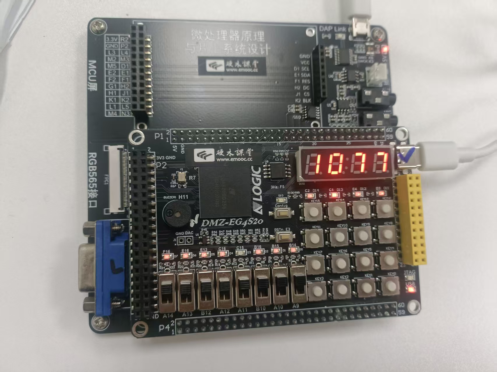
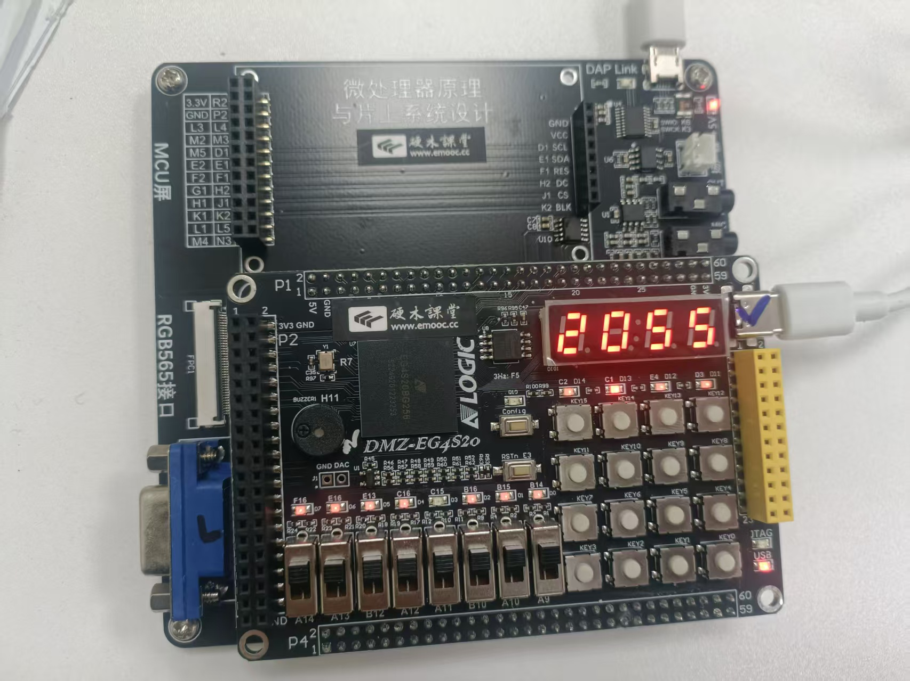
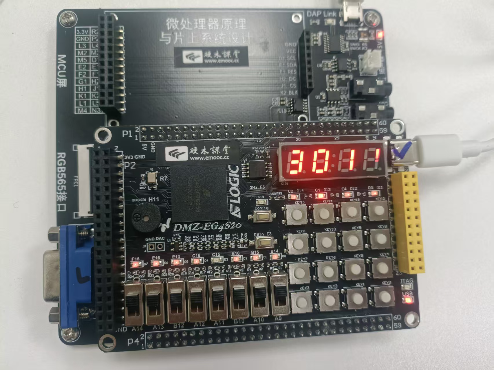

综合实验: GCD 计算器
综合应用
- 前面我们分别设计了 GCD 加速器、矩阵键盘和数码管控制器.
- 现在把它们整合起来, 做一个完整的 GCD 计算器!
- 用键盘输入两个数, 硬件计算最大公约数, 结果显示在数码管上.
- 地址映射 (对应
AHBlite_Decoder的端口 0~4):0x00000000 - 0x0000FFFF: Port0 → Block RAM Code 空间, CPU 取指令就在这里完成。0x20000000 - 0x2000FFFF: Port1 → Block RAM Data 空间, 供栈与全局变量读写。0x40000000 - ...: Port2 → GCD 包装器, 映射DATA_A/B,CTRL,STATUS等寄存器。0x40000010: Port3 → 数码管 (Segdisp) 包装器, 写入显示缓冲/小数点控制。0x40000014: Port4 → 矩阵键盘包装器, 读取键值/发送清除脉冲。- 其余未分配的地址默认回落到 “无效从设备”, 在
AHBlite_SlaveMUX中会返回HRDATA = 0、HREADY = 1。
SoC 硬件结构速览
CortexM0_SoC.v
- 功能: 顶层 SoC, 将 Cortex-M0 内核、AHB-Lite 总线和外设统一到同一片上, 并导出键盘行列、数码管位段信号。
AHBlite_Interconnect / AHBlite_Decoder / AHBlite_SlaveMUX
- 功能: 构成 AHB-Lite 互联矩阵, 根据
HADDR[31:16]选择不同端口, 并在多个外设之间复用HRDATA/HREADY/HRESP。
AHBlite_Block_RAM
- 功能: 为 code/data BRAM 提供 AHB 接口, 支持字/半字/字节访问, 复用工程生成的
code.hex初始化镜像。
AHBlite_GCD / AHBlite_Keyboard / AHBlite_Segdisp
- 功能: 各外设的 AHB 包装器, 负责接收
HADDR/HWRITE/HTRANS/HWDATA并驱动核心逻辑, 同时提供寄存器映射、状态位与清除信号。
GCD.v / Keyboard.v / Segdisp.v
- 功能: 核心算法部分, 分别包含状态机、矩阵键盘扫描+消抖+寄存器链路、以及动态扫描+段选/位选的显示控制。
clk_division.v / counter.v / Mux.v / seg_sel_decoder.v / seg_led_decoder.v
- 功能: 为数码管提供分频、循环计数、数据复用与译码。
keyboard_scan.v / keyboard_filter.v / keyboard_reg.v
- 功能: 键盘扫描、消抖、锁存; 输出
key_pulse。
Block_RAM.v
- 功能: 通过
$readmemh装载程序, 与AHBlite_Block_RAM配合完成指令/数据访问。
必读通知
在综合实验中, 我们需要把 LAB 5 前几节的改动全部整合, 请按照下列顺序补全 Verilog 文件:
clk_division.v- 任务: 实现扫描时钟分频逻辑。
keyboard_scan.v- 任务: 实现扫描时钟生成逻辑。
keyboard_filter.v- 任务: 实现按键消抖脉冲生成逻辑。
Keyboard.v- 任务: 实例化扫描/消抖两个模块。
seg_led_decoder.v- 任务: 将 4-bit 数据映射到 7 段 + dp 码表。
Segdisp.v- 任务: 实例化时钟分频/计数器两个模块。
GCD.v- 任务: 实现状态机模块部分编写。
AHBlite_GCD.v- 任务: 实现读操作部分模块编写。
AHBlite_Decoder.v- 任务: 修改端口使能信号。
Block_RAM.v- 任务: 修改code.hex文件的路径，使得BRAM得以正常工作。
一旦以上模块全部补全、仿真通过, 就可以顺利进入后续的软件联调与整机测试流程, 真正把 GCD 计算器跑在 SoC 上。
软件部分
主控程序 main_gcd_system.c
代码结构解读
main_gcd_system.c 负责把矩阵键盘 → GCD 外设 → 数码管串联起来, 整体逻辑可以概括为一个三态机:
- STATE_INPUT_A: 轮询键盘, 支持最多 3 位数字, 每输入一位就调用
display_state_val()刷新数码管。 - STATE_INPUT_B: 流程与输入 A 相同, 继续累积第二个操作数。
- STATE_RESULT: 将两个数送入 GCD 加速器, 轮询状态位, 以十进制形式显示结果。按键 16 (
#) 负责状态推进, 按键 10 (0) 参与数值输入。 代码中保留了“需要补充的代码”标记, 请务必按照下方提示补齐, 否则 GCD 模块不会被启动。
补齐 GCD 启动与结果读取
在 STATE_INPUT_B → STATE_RESULT 的分支中依次完成以下动作:
- 先写操作数 A, 再写操作数 B。
- 往控制寄存器写入
1, 作为start脉冲启动状态机。 - 轮询结果寄存器的 bit[31], 等待
done置位。 - 读取结果寄存器, 使用
0x7FFFFFFF掩码屏蔽掉最高位, 得到真正的公约数。
主程序中的疑难解答
- 为什么要按顺序写 A、B?
AHBlite_GCD在检测到 B 被写入时就会把寄存器内容送入核心, 因此必须先写 A 再写 B。 - 控制寄存器为何写 1?
GCD_CTRL的 bit0 作为start信号, 置 1 即可启动状态机。 - 为何屏蔽 bit31?
GCD_RESULT的最高位为done标志, 需要通过0x7FFFFFFF掩码获得真正的公约数。
在完成上述的一系列操作之后，我们已经将verilog文件与C程序全部编写完毕，之后便可以进行后续的keil调试环节与TD验证了。
测试部分
keil与TD环节
同学们参考实验一至实验四，独立完成keil调试与TD验证环节，下面仅给出全部调通后的验证操作环节。
功能描述与调试提示
系统端到端就是一个交互式 GCD 计算器, 建议按下列步骤在开发板上逐步验证:
状态 1 (Input A)
- 数码管最左位显示
1, 表示当前等待输入 A。 - 通过矩阵键盘输入 0-999, 按键 1-9 对应数字 1-9, 按键 10 对应数字 0。
- 按键 16 (
#) 确认, SoC 应切到下一状态。
- 数码管最左位显示
状态 2 (Input B)
- 数码管最左位显示
2, 输入流程与 A 相同。 - 继续输入第二个数 B, 观察数码管是否实时更新。
- 按键 16 (
#) 触发 GCD 硬件计算。
- 数码管最左位显示
- 状态 3 (Result)
- 数码管最左位显示
3, 其余三位显示硬件计算出的 GCD。 - 按键 16 (
#) 重置状态机回到状态 1, 同时清空寄存器。 - 调试时可输入多组数据 (如 36/60、48/18) 确认结果正确。
- 数码管最左位显示
示例演示: 77 与 55 的最大公约数
输入 77
- 切换到状态 1 后依次按下
7、7, 数码管实时显示“1 0 7 7”。 - 若显示正确, 说明键盘 → 数码管路径畅通。

输入 77 的效果
- 切换到状态 1 后依次按下
输入 55
- 按
#进入状态 2（即按键16）, 按键5、5录入第二个操作数。 - 数码管应显示“2 0 5 5”, 表示当前正在等待确认。

输入 55 的效果
- 按
得到结果 11
- 再次按
#启动 GCD, 很快即可在状态 3 看到“3 0 1 1”。 - 这表明硬件已返回 GCD(77, 55) = 11, 功能验证通过。

结果 11 的显示
- 再次按